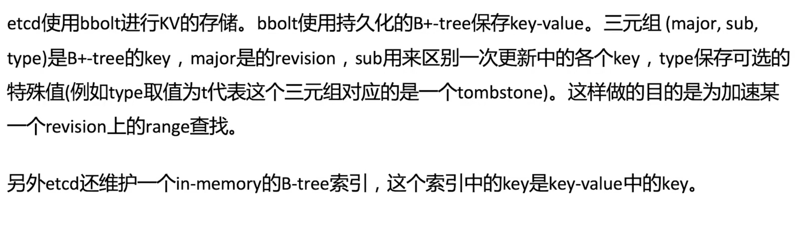
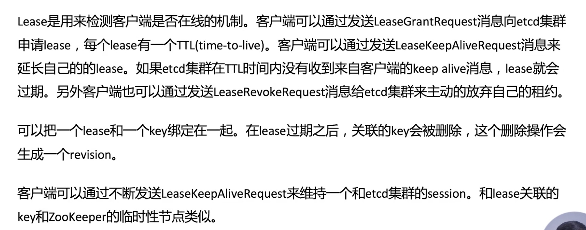

Etcd
对比


MVCC

数据存储

命令行
- etcdctl get "" --prefix=true
- etcdctl del "" --prefix=true
etcdAPI

- header

- keyvalue

- keyrange

- kv

- TXn API


- Watch API

- Lease API

package etcd_code
import (
"context"
"fmt"
v3 "go.etcd.io/etcd/clientv3"
"testing"
)
func printGetResponse(r *v3.GetResponse) {
fmt.Printf("response header: %q\n", r.Header)
fmt.Printf("kvs: %v\n", r.Kvs)
fmt.Printf("more: %t\n", r.More)
fmt.Printf("count: %d\n", r.Count)
}
// Run beforehand:
// etcdctl put TestGet 1
func TestGet(t *testing.T) {
cli := newClient(t)
defer cli.Close()
key := "TestGet"
response, err := cli.Get(context.Background(), key)
if err != nil {
t.Fatal(err)
}
printGetResponse(response)
}
// Run beforehand:
// etcdctl put TestGetWithPrefix 1
// etcdctl put TestGetWithPrefix2 2
func TestGetWithPrefix(t *testing.T) {
cli := newClient(t)
defer cli.Close()
keyPrefix := "TestGetWithPrefix"
response, err := cli.Get(context.Background(), keyPrefix, v3.WithPrefix())
if err != nil {
t.Fatal(err)
}
printGetResponse(response)
}
// Run beforehand:
// etcdctl put TestGetWithRange 1
// etcdctl put TestGetWithRange2 2
func TestGetWithRange(t *testing.T) {
cli := newClient(t)
defer cli.Close()
response, err := cli.Get(context.Background(), "TestGetWithRange", v3.WithRange("TestGetWithRange2\x00"))
if err != nil {
t.Fatal(err)
}
printGetResponse(response)
}
// Run beforehand:
// etcdctl put TestGetWithSerializable 1
func TestGetWithSerializable(t *testing.T) {
cli := newClient(t)
defer cli.Close()
key := "TestGetWithSerializable"
response, err := cli.Get(context.Background(), key, v3.WithSerializable())
if err != nil {
t.Fatal(err)
}
printGetResponse(response)
}
func TestPut(t *testing.T) {
cli := newClient(t)
defer cli.Close()
key := "TestPut"
response, err := cli.Put(context.Background(), key, "1", v3.WithPrevKV())
if err != nil {
t.Fatal(err)
}
fmt.Printf("header: %q\n", response.Header)
fmt.Printf("prev_kv: %q\n", response.PrevKv)
}
// Run beforehand:
// etcdctl put TestDelete 1
func TestDelete(t *testing.T) {
cli := newClient(t)
defer cli.Close()
key := "TestDelete"
response, err := cli.Delete(context.Background(), key)
if err != nil {
t.Fatal(err)
}
fmt.Printf("header: %v\n", response.Header)
fmt.Printf("deleted: %d\n", response.Deleted)
fmt.Printf("pre_kvs: %v\n", response.PrevKvs)
}
// Run beforehand:
// etcdctl put TestTxn 1
func TestTxn(t *testing.T) {
cli := newClient(t)
defer cli.Close()
key := "TestTxn"
thenValue := "then"
ctx := context.Background()
_, err := cli.Txn(ctx).
If(v3.Compare(v3.Value(key), "<", "2")).
Then(v3.OpPut(key, thenValue)).
Else(v3.OpPut(key, "else")).
Commit()
if err != nil {
t.Fatal(err)
}
// Return "then"
gresp, err := cli.Get(ctx, key)
if err != nil {
t.Fatal(err)
}
if l := len(gresp.Kvs); l != 1 {
t.Errorf("expeected 1 key-value, but got %d key-values\n", l)
}
if value := string(gresp.Kvs[0].Value); value != "then" {
t.Errorf("expected value %s, but got %s\n", thenValue, value)
}
for _, ev := range gresp.Kvs {
fmt.Printf("%s: %s\n", ev.Key, ev.Value)
}
//delete(cli, key, t)
}
func TestTxnOpOrder(t *testing.T) {
cli := newClient(t)
defer cli.Close()
key := "TestTxnOpOrder"
ctx := context.Background()
// If CreateRevision is 0, it means that the key does not exist.
cmp := v3.Compare(v3.CreateRevision(key), "=", 0)
put := v3.OpPut(key, "1")
get := v3.OpGet(key)
// Get Put
resp, err := cli.Txn(ctx).If(cmp).Then(get, put).Commit()
if err != nil {
t.Fatal(err)
}
printTxnResponse(resp)
if l := len(resp.Responses[0].GetResponseRange().Kvs); l != 0 {
t.Errorf("expeected 0 key-value, but got %d key-values\n", l)
}
delete(ctx, cli, key, t)
// Put Get
resp, err = cli.Txn(ctx).If(cmp).Then(put, get).Commit()
if err != nil {
t.Fatal(err)
}
printTxnResponse(resp)
if l := len(resp.Responses[1].GetResponseRange().Kvs); l != 1 {
t.Errorf("expeected 1 key-value, but got %d key-values\n", l)
}
delete(ctx, cli, key, t)
}
func TestTxnMultis(t *testing.T) {
cli := newClient(t)
defer cli.Close()
ctx := context.Background()
keyPrefix := "TestTxnMultis"
keys := []string{keyPrefix + "1", keyPrefix + "2"}
var cmps [2]v3.Cmp
var puts [2]v3.Op
var gets [2]v3.Op
for i := 0; i < 2; i++ {
val := string(i + 1)
cmps[i] = v3.Compare(v3.CreateRevision(keys[i]), "=", 0)
puts[i] = v3.OpPut(keys[i], val)
gets[i] = v3.OpGet(keys[i])
}
// Executes two Puts
tresp, err := cli.Txn(ctx).If(cmps[:]...).Then(puts[:]...).Else(gets[:]...).Commit()
if err != nil {
t.Fatal(t)
}
if !tresp.Succeeded {
t.Fatal("Txn should succeed, but failed")
}
// Executes two Gets
tresp, err = cli.Txn(ctx).If(cmps[:]...).Then(puts[:]...).Else(gets[:]...).Commit()
if err != nil {
t.Fatal(t)
}
if tresp.Succeeded {
t.Fatal("Txn should fail, but succeeded")
}
for i := 0; i < 2; i++ {
if count := tresp.Responses[i].GetResponseRange().Count; count != 1 {
t.Errorf("expected 1 value for key %s, but got %d value", keys[0], count)
}
}
// Execute two Deletes
tresp, err = cli.Txn(ctx).Then(v3.OpDelete(keys[0]), v3.OpDelete(keys[1])).Commit();
if err != nil {
t.Fatal(err)
}
for _, r := range tresp.Responses {
if deleted := r.GetResponseDeleteRange().Deleted; deleted != 1 {
t.Fatalf("expected to delete 1 key-value, but deleted %d key-value", deleted)
}
}
gresp, err := cli.Get(ctx, keyPrefix, v3.WithPrefix())
if gresp.Count != 0 {
t.Errorf("expected 0 key-values, bot got %d", gresp.Count)
}
}
func printTxnResponse(resp *v3.TxnResponse) {
fmt.Printf("response header: %q\n", resp.Header)
fmt.Printf("succeeded: %t\n", resp.Succeeded)
}
// version revision test
func TestVersionAndRevision(t *testing.T) {
cli := newClient(t)
defer cli.Close()
key := "TestVersionAndRevision"
ctx := context.Background()
put(ctx, cli, key, t)
get(ctx, cli, key, t)
put(ctx, cli, key, t)
get(ctx, cli, key, t)
delete(ctx, cli, key, t)
put(ctx, cli, key, t)
get(ctx, cli, key, t)
put(ctx, cli, key, t)
get(ctx, cli, key, t)
}
func put(ctx context.Context, cli *v3.Client, key string, t *testing.T) {
fmt.Println("Put")
response, err := cli.Put(ctx, key, "one", v3.WithPrevKV())
if err != nil {
t.Fatal(err)
}
fmt.Printf("put revision: %d\n", response.Header.Revision)
fmt.Printf("prev_kv: %v\n\n", response.PrevKv)
}
func get(ctx context.Context, cli *v3.Client, key string, t *testing.T) {
fmt.Println("Get")
response, err := cli.Get(ctx, key, v3.WithPrevKV())
if err != nil {
t.Fatal(err)
}
fmt.Printf("get revision: %d\n", response.Header.Revision)
fmt.Printf("kvs: %v\n\n", response.Kvs)
}
func delete(ctx context.Context, cli *v3.Client, key string, t *testing.T) {
fmt.Println("Delete")
response, err := cli.Delete(ctx, key, v3.WithPrevKV())
if err != nil {
t.Fatal(err)
}
fmt.Printf("delete revision: %d\n", response.Header.Revision)
fmt.Printf("deleted: %d\n", response.Deleted)
fmt.Printf("prev_kvs: %v\n\n", response.PrevKvs)
}